CLB and ECAP Lab#
The objective of this lab is to gain more advanced skill with the Configurable Logic Block (CLB) peripheral and its submodules. The scenario in this lab consists of implementing an enhanced capture (eCAP) module using parts of the CLB. This demonstration showcases the CLB’s ability to connect to a signal, accurately time events, and send data to the CPU. The CLB will measure a high signal, a low signal, and another high signal before sending the data to the CPU. An external wave generator or the ePWM module can be set up to supply a signal, if a wave generator is not available.
Solution#
The Academy lab modules provide step-by-step instructions for users to follow along and carry out; however, the completed software solutions are also available in the device’s SDK.
See your device’s specific SDK to obtain this lab’s software solution.
You can download your device’s SDK by going to the device’s product page on TI’s website and navigating to the ‘Design & Development’ and ‘Software Development’ tabs.
This specific lab’s solution can be found in: [Device_SDK_Install_Path]/examples/driverlib/single_core/clb.
Overview#
In this lab, a CLB tile will be used to implement the same basic functionality as an eCAP peripheral. The CLB will use edge filtering to create events where counters can start and stop, and data can be pushed to the CPU. The purpose of this is to simulate an eCAP with its basic features.
An eCAP operates by measuring the time between two signal transitions using a counter. This peripheral can measure the time between two high pulses, two low pulses, a low and a high pulse, and a high and a low pulse. The CLB, because it has a counter and methods of triggering events, can therefore be used in much the same way.
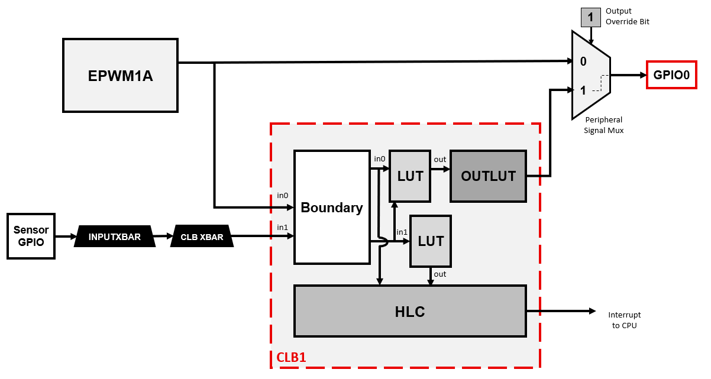
Lab Setup#
Hardware Setup#
Required hardware for this lab:
ControlSOM with the supplied USB cable.
Jumper cables (1).
Waveform generator. (optionally available to use ePWM instead of waveform generator)
This lab exercise is intended for the F29H85x ControlSOM. Before continuing this lab, please be sure to reference the ControlSOM User Guide for hardware setup details.
Using the supplied USB cable, connect the USB Type-C connector into your C2000 board and the USB Standard Type-A connector into your computer’s USB port.
Please note that the docking station is not necessary for this lab but may be required to successfully run other Academy labs.
If you are using the ControlSOM docking station, an additional power supply is needed for the docking station. See the ControlSOM User Guide for more details.
Check the power status LEDs (LED0 and LED1) to confirm that the board is powered and provides a JTAG communication link between the device and CCS.
Later in the lab, the sensor GPIO pin will be routed to either GND or 3.3V, so ensure you have a jumper cable. An oscilloscope is optional, but will allow the EPWM output to be viewed through GPIO0.
Software Setup#
Required software for this lab:
The device’s SDK
Your device’s software development kit (SDK) download can be found on the “Software Development” section of your device’s product page on TI’s website.
The Code Composer Studio (CCS) platform.
See the CCS User’s Guide for more information about this IDE.
Start a CCS Project#
Our first task is to import an empty project to our CCS workspace.
Open CCS and go to File → Import Project(s). A new window should appear.
Click the Browse button and select the
[MCU_SDK_[DEVICE]_Install_Path]/examples/driverlib/single_core/empty_projectsand click “Select Folder”.Note that the default Windows installation directory
[MCU_SDK_[DEVICE]_Install_Dir]isC:/ti/c2000/MCU_SDK_[DEVICE]_X_XX_XX_XX_XX.
Under Discovered Projects, you should now see the
empty_driverlib_project.

Click Finish to import and copy the
empty_driverlib_projectinto your CCS workspace.After the project has been imported, the project explorer window should look like below:

Rename the project:
Right-click on the project in the “Project Explorer” panel. Select Rename from the drop-down menu and rename the project to ‘clb_ecap_academy_lab’ or a name of your choosing.
Now click the Down Arrow located to the left of the imported project to expand it and select
empty_driverlib_project.c. Right-click on the file, and select Rename to rename the file to ‘clb_ecap_academy_lab.c’ or a name of your choosing.
Configure the GPIOs#
We will now use SysConfig to set up the a GPIO signal that will be used as the LED. For example, for F29H85x controlSOM, there are two LED GPIOs available:
LED0 = GPIO9
LED1 = GPIO23
LED GPIO#
LED 0#
In the project directory, open the
.syscfgfile by double-clicking on it.Navigate to the
Softwaretab in this SysConfig (it should open by default).In the ‘SYSTEM’ group, click + next to ‘GPIO’ to add a GPIO instance.
Change the GPIO settings as shown and described below.
Rename the GPIO to “myBoardLED0_GPIO”.
Change the ‘GPIO Direction’ to an “output”.
Click the box to enable ‘Write Initial Value’ and select “0” as the ‘Initial Value’.
Click on the ‘Pinmix’ drop-down to expand it, and select the board’s LED GPIO (in this case, GPIO9).
To check or confirm which GPIO is connected to your board’s LED, reference your board’s schematics.

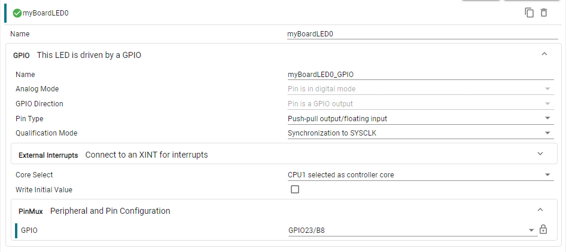
Optional GPIO#
We can configure another GPIO to serve as the external signal source:
Select the “Software” tab on the left panel of SysConfig
Add a GPIO by clicking the (+) icon next to ‘GPIO’ on the left pane
Set the GPIO as an input
Set the Pin Type as “Push-pull output/floating input”
Now, we have to specify which GPIO we are configuring. Upon expanding the “PinMux” view we can choose the desired GPIO. Follow the steps below:
Click on the three dot icon at the top right of the SysConfig window
Select “Preferences & Actions”
Under preferences, click on the ‘Device Pin Label’ drop down arrow and enable “Device pin name”. This is not part of the default SysConfig settings, but it allows us to see the pin name along with the pin number
Within the GPIO PinMux, select the desired GPIO. Refer to the table below:
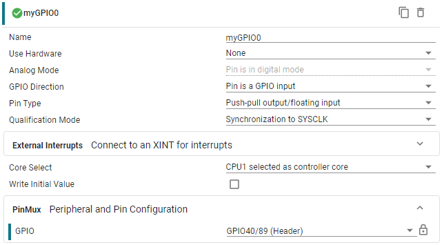
INPUT X-BAR#
To be able to use the GPIO as a CLB input, we need to route the GPIO as an
auxiliary signal (AUXSIG) through the global input bus. This requires using the
input crossbar (INPUT X-BAR) and CLB crossbar (CLB X-BAR). First, configure the
INPUT X-BAR to connect the GPIO you selected to INPUTXBAR1 using the steps below:
Add INPUT X-BAR by clicking the (+) icon next to ‘INPUTXBAR’ on the left pane
Select INPUTXBAR1 as the INPUT X-BAR instance to be used
Configure INPUTXBAR1 to use the selected GPIO
If desired, check the box to lock INPUTXBAR1

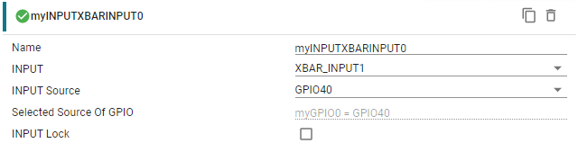
CLB XBAR#
Next, the CLB X-BAR needs to be configured to route INPUTXBAR1 as an auxiliary
signal into the CLB. Configure the CLB X-BAR to route INPUTXBAR1 to AUXSIG0
using the steps below:
Add a CLB X-BAR instance by clicking the (+) icon next to ‘CLBXBAR’ on the left pane
Select AUXSIG0 as the Aux Signal Input
Select INPUTXBAR1 signal as the input source
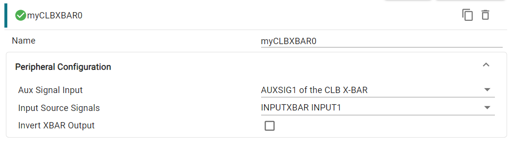
Now, the additional GPIO has been successfully configured as AUXSIG0 on the global input bus and can be used as an input into the CLB.
Configure the EPWM#
The EPWM module will be used to represent an external signal, and is configured to be a 2kHz PWM waveform with a 50% duty cycle on ePWM1A (NOTE: here the system clock is set to 100 MHz, see ePWM section for calculating frequency from time base period). For more information on the PWM, please review the Control Peripherals module.
We will start by adding a PWM instance within Sysconfig by clicking on the (+) sign next to ‘EPWM’ within the left pane of Sysconfig. Name this EPWM instance ‘myEPWM1’. Now that we have added an EPWM instance, we will configure the EPWM1 ‘Timebase’ submodule as follows:
Set High Speed Clock Divider to ‘Divide clock by 1’
Set Time Base Period to ‘25000’
Set Counter Mode to ‘Up - down - count mode’
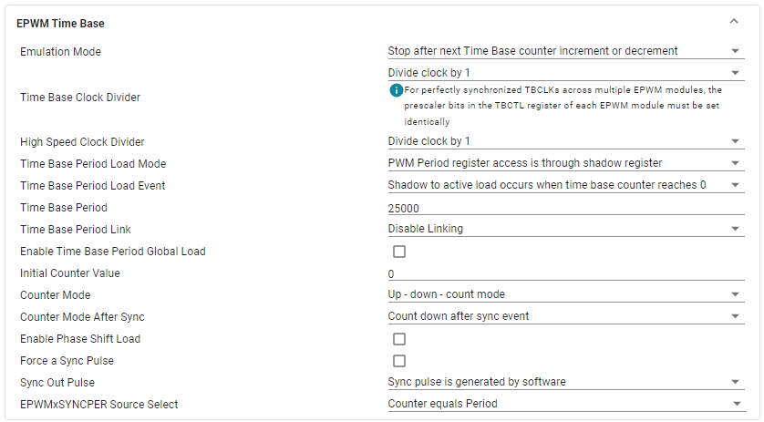
The ‘Counter Compare’ submodule for EPWM1A will be as follows:
Set Counter Compare A (CMPA) to ‘12500’
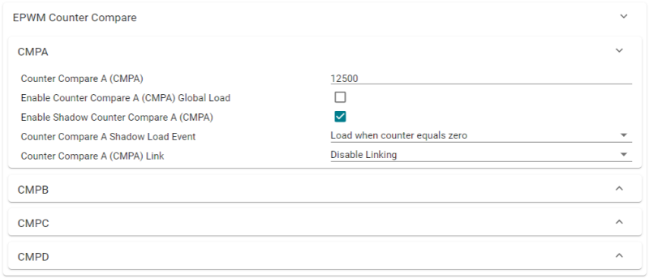
Now, configure the ‘Action Qualifier’ submodule for EPWM1A as follows:
Enable Shadow Mode
Set Shadow Load Event to ‘Load when counter equals zero’
In Events to Configure for ePWMxA output, select ‘Time base counter up equals COMPA’ and ‘Time base counter down equals COMPA’
Set Time base counter up equals COMPA to ‘Set output pins to High’
Set Time base counter down equals COMPA to ‘Set output pins to Low’
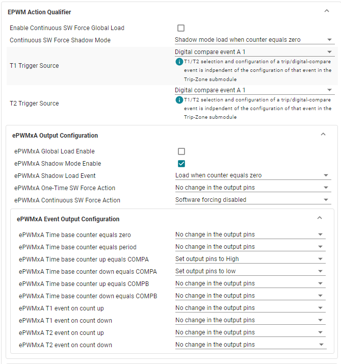
Lastly, we need to configure the PinMux for EPWM1A. Even though the output of ePWM1A will be overridden by the output of the CLB, configuring the output GPIO is good practice as it allows us to view the pure ePWM1A pulse for debugging purposes. Follow the steps below:
Select ‘CUSTOM’ on the EPWM1 PinMux. This allows us to select only EPWM_A as an output
Configure the Pin as ‘EPWM_A’
Set the EPWM Peripheral to be used as ‘EPWM1’
Configure the ‘EPWM_A’ pin to be ‘GPIO0’
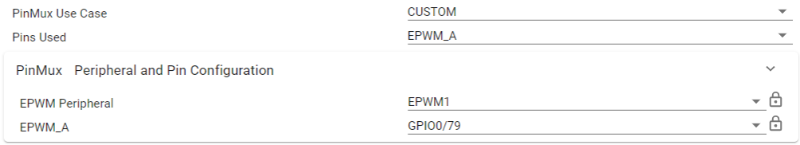
Configure the CLB#
To setup the CLB peripheral, we need to add a CLB instance within SysConfig. We will need to setup this CLB instance to use the external signal as an input. We must also attach an interrupt handler to this CLB instance so that the HLC can issue interrupts to the CPU to send data. Setup CLB1 by following the steps below:
Add a CLB by clicking the (+) icon next to ‘CLB’ on the left pane
Set the CLB Instance to be ‘CLB1’
Select ‘Input 0’, ‘Input 1’, and ‘Input 2’ as Inputs Used for CLB1
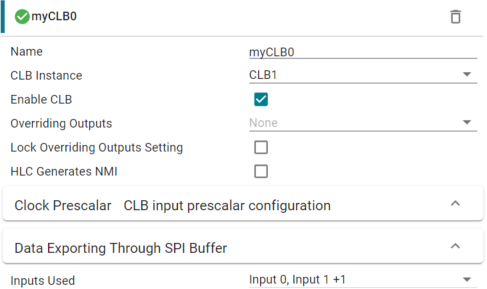
Now we will route the GPIO input into Input 0 of CLB1. Doing this allows us to select AUXSIG0 as an input into CLB1. Configure Input 0 as follows:
Set the Input type as ‘Use Global Mux’
Under the dropdown for Global Mux Input, select ‘CLB X-BAR AUXSIG0’ if you are using an external signal for the input. Otherwise, select ‘EPWM1A’ for an internal square wave
You can enable input syncing, but not necessary
No syncing or initial GPREG writes are necessary
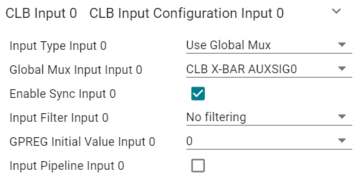
Next, we will route the GPIO input into Input 1 of CLB1. Configure Input 1 as follows:
Set the Input type as ‘Use Global Mux’
Use the same dropdown option as Input 0
Set the Input Filter to be Rising edge detect and enable synchronization
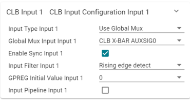
Finally, we will route the GPIO input into Input 2 of CLB1. Configure Input 2 as follows:
Set the Input type as ‘Use Global Mux’
Use the same dropdown option as Input 0
Set the Input Filter to be Falling edge detect and enable synchronization
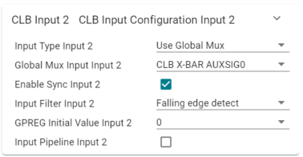
Because the HLC submodule within CLB1 will be issuing interrupts to the CPU when a fault is detected, an Interrupt Handler must be configured. Follow the steps below to do this:
Check the box next to ‘Attach a TILE Config to this CLB’
Check the box next to ‘Initialize TILE’
Configure the CLB Tile#
Now it is time to configure the CLB1 tile to perform the logic necessary to implement an eCAP and send data to the CPU. This requires configuring submodules within the CLB: LUT (Look-Up Table), FSM (Finite State Machine), Counter, and the HLC (High Level Controller).
If you didn’t add a tile by selecting the “Attach a TILE Config to this CLB” checkbox, navigate to the ‘Tile Design’ peripheral within the SysConfig GUI and add a single ‘Tile Design’ instance. Begin the CLB tile configuration by editing LUT0.
Look-Up Table 0#
LUT0 will be responsible for creating an enable for the counter when the signal is low. Configure LUT0 as follows:
Select ‘Boundary input 0’ as the input for ‘Input 0’. This corresponds to the external signal
In the ‘Logic Equation’ field, enter the following logical expression:
!i0With this logic, the output of LUT0 will be the inverse of the external signal.
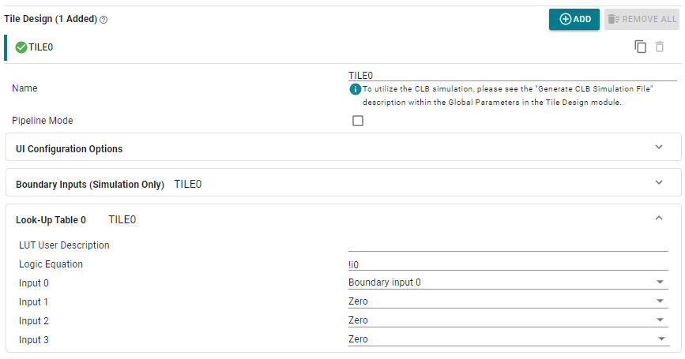
Look-Up Table 1#
LUT1 will be responsible for detecting the first high signal of a square wave. The output of this LUT will be used as an event trigger by the HLC so that the counter can store the time of the first high pulse. Configure LUT1 as follows:
Select ‘FSM 0 State 0 Value’ as the input for ‘Input 0’. This corresponds to the state where the first high pulse occurs in the square wave.
Select ‘Boundary input 2’ as the input for ‘Input 1’. This corresponds to the event where a falling edge occurs, or in other words the end of the high pulse.
In the ‘Logic Equation’ field, enter the following logical expression:
i0&i1The result of this logic is that an event will be triggered in the HLC when the FSM detects the ‘first’ high pulse of a wave and the pulse has just fallen low.
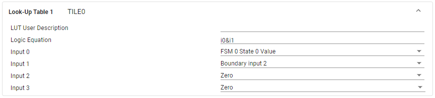
Look-Up Table 2#
LUT2 will be responsible for detecting the second high signal of a square wave. The output of this LUT will be used as an event trigger by the HLC so that the counter can store the time of the first high pulse. Configure LUT_2 as follows:
Select ‘FSM 0 State 1 Value’ as the input for ‘Input 0’. This corresponds to the state where the second high pulse occurs in the square wave.
Select ‘Boundary input 2’ as the input for ‘Input 1’. This corresponds to the event where a falling edge occurs, or in other words the end of the high pulse.
In the ‘Logic Equation’ field, enter the following logical expression:
i0&i1The result of this logic is that an event will be triggered in the HLC when the FSM detects the ‘second’ high pulse of a wave and the pulse has just fallen low
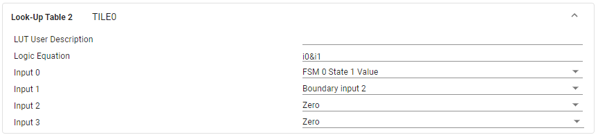
Finite State Machine 0#
Now we must configure FSM0 to transition between states that divide a signal so that there is a first and second high signal that can be distinguished:
Set ‘Boundary input 1’ as the input for ‘External Input 0’, which is the rising edge detect input.
Set the ‘State 0 Output Equation (S0)’ as
s0^e0. This logic dictates that S0 will be true when the first high pulse is occurring (S0 indicates the first high pulse), the rising edge has occurred, but not both/neither.Set the ‘State 1 Output Equation (S1)’ as
!(s0^e0). This logic states that S1 will be true when either a rising edge and the first high pulse is occurring simultaneously, or neither are occurring. S1 indicates the second high pulse.In the ‘LUT Output Equation’ field, enter the following logical expression:
s0
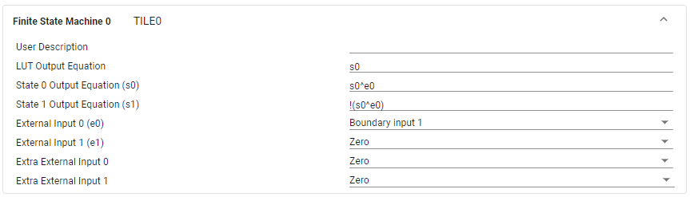
Counter 0#
Next are the counters. Two counters will be used for this lab, one to count the length of time the signal is high, the other to count when it is low. COUNTER0 will count up when the signal is high, and reset when a rising edge occurs. Because it is measuring between rising edges and only counting when the signal is high, it will only measure the length of the high pulse. Counter0 should be set as follows:
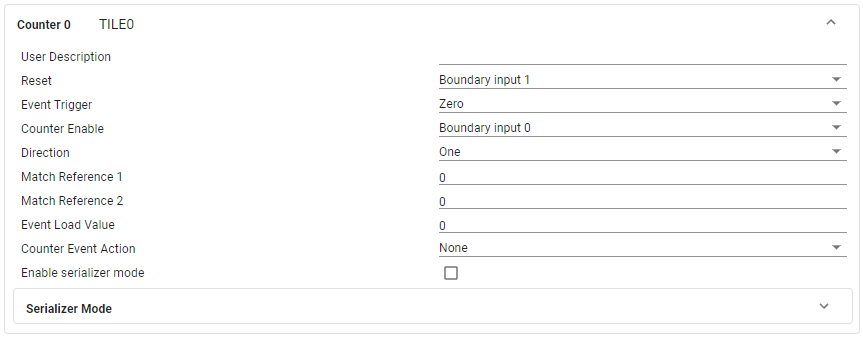
Counter 1#
COUNTER1 will measure the length of time the signal is low. This counter counts when the inverse of the signal (from LUT0) is high and resets on a falling edge. This measures between falling edges and only counts the time when the inverse of the signal is high, thereby only measuring the times the actual signal is low. Counter1 should be set as follows:
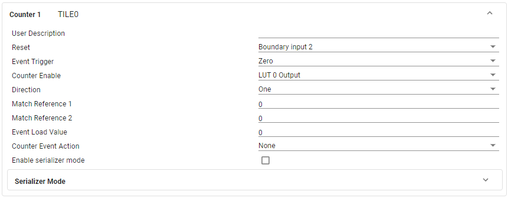
High Level Controller#
Finally, the High-Level Controller is configured with three events.
Event 0 is triggered by the first high pulse of the sensor input and will load the value from COUNTER0 into the R0 register.
Event 1 is triggered by the low pulse of the sensor input and will load the value from COUNTER1 into the R1 register.
Event 2 is triggered by the second high pulse of the sensor input and will load the value from COUNTER0 into the R2 register. Then the registers are pushed and an interrupt is triggered so the CPU may read the data. The interrupt is triggered here so that the first high pulse, low pulse, and second high pulse are sent to the CPU without missing or overwriting data.
Configure the HLC as follows:
Select ‘LUT 1 Output’ as the trigger condition for ‘Event 0’
Select ‘Boundary input 1’ as the trigger condition for ‘Event 1’
Select ‘LUT 2 Output’ as the trigger condition for ‘Event 2’
Extend the “Other Dependencies” tab
Open ‘HLC Program 0’, ‘HLC Program 1’, and ‘HLC Program 2’ drop-downs
For ‘Program 0’, set the ‘Instruction 0’ field to the following operation:
MOV C0, R0For ‘Program 1’, set the ‘Instruction 0’ field to the following operation:
MOV C1, R1For ‘Program 2’, set the the instructions:
‘Instruction 0’ operation:
MOV C0, R2‘Instruction 1’ operation:
PUSH R0‘Instruction 2’ operation:
PUSH R1‘Instruction 3’ operation:
PUSH R2‘Instruction 4’ operation:
PUSH R3‘Instruction 5’ operation:
INTR 1
Settings should be as shown below:
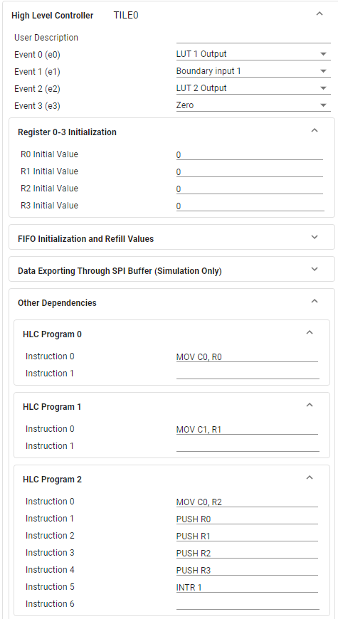
Program Setup#
Now that we have configured the CLB module within SysConfig, we can switch to the application code portion of this lab. Within the project click on the .c file under the name you chose.
Define Global Macros and Variable#
The first thing we will do is define any variables we are using throughout the project and set up the content within the main() function, which includes device initialization.
We begin by including the basic necessary libraries driverlib.h and device. h. Next, include the SysConfig-generated header file board.h. This should
already be included by default. Lastly, include the clb_config.h and clb.h
libraries, which are required for proper CLB function. These two CLB libraries
are included by default if the clb_empty project was imported.
//
// Included Files
//
#include "driverlib.h"
#include "device.h"
#include "board.h"
Then we define the global variables that will be used.
//
// Macros and Global Variables
//
volatile float32_t frequency = 0.0;
volatile float32_t period = 0.0;
volatile float32_t duty = 0.0;
volatile float32_t timesHLH[3];
volatile uint32_t regPush[4];
volatile uint32_t firstHigh = 0;
volatile uint32_t firstLow = 0;
volatile uint32_t secondHigh = 0;
volatile uint16_t ledCount = 0;
volatile uint16_t gpioStatus = 0;
Next we declare the interrupt functions used.
//
// Functions
//
__attribute__((interrupt("INT"))) void INT_myCLB0_ISR(void);
Define main()#
Next, we define the contents within main() which includes device initialization and peripheral setup:
//
// Main
//
int main(void)
{
//
// CPU Initialization
//
Device_init();
Device_initGPIO();
Interrupt_initModule();
Interrupt_initVectorTable();
Board_init();
Interrupt_enable(INT_CLB1);
Interrupt_register(INT_CLB1, &INT_myCLB0_ISR);
//
// Enable PIPE Global Interrupt (for INTs and RTINTs) and INT enablein CPU.
//
ENINT;
Interrupt_enableGlobal();
//
// Local variables
//
uint32_t clockFreq = DEVICE_SYSCLK_FREQ;
uint32_t firstHighCLB = 0;
uint32_t firstLowCLB = 0;
uint32_t secondHighCLB = 0;
while(1)
{
//
// Frequency, period, duty, and other timing calculations
// NOTE: 1 is added to each count because of zero-indexing counter
//
firstHighCLB = regPush[0] + 1;
firstLowCLB = regPush[1] + 1;
secondHighCLB = regPush[2] + 1;
frequency = (float32_t)(clockFreq) / ((float32_t)(firstHighCLB + firstLowCLB));
period = 1 / frequency;
timesHLH[0] = (float32_t)(firstHighCLB) / (float32_t)(clockFreq);
timesHLH[1] = (float32_t)(firstLowCLB) / (float32_t)(clockFreq);
timesHLH[2] = (float32_t)(secondHighCLB) / (float32_t)(clockFreq);
duty = timesHLH[0] * frequency * 100;
}
}
Set Up the CLB ISR#
Finally, within the .c file, we need to write the ISR (interrupt service routine).
The first thing that will be done in the interrupt is reading the pushed registers via the read FIFO function.
Note: The name of the ISR function is what we defined earlier within the SysConfig configuration for the CLB.
Add this code below your main() to begin your ISR.
__attribute__((interrupt("INT"))) void INT_myCLB0_ISR(void)
{
CLB_readFIFOs(myCLB0_BASE, (uint32_t *)regPush);
A GPIO pin will be toggled upon reaching a certain counter value of a global variable. This is to show that the ISR is triggering properly. Lastly, we must acknowledge the PIE group as well as clear the interrupt status flag so that we can continue to service interrupts in the future. Add the below to complete your ISR
//
// Toggle the GPIO pins; increase from 1000 to slow down the toggle
//
ledCount = (ledCount + 1) % (1000);
if(ledCount == 0)
{
if(gpioStatus)
{
gpioStatus = 0;
}
else
{
gpioStatus = 1;
}
GPIO_writePin(myBoardLED1_GPIO, gpioStatus);
}
CLB_clearInterruptTag(myCLB0_BASE);
}
This concludes the coding portion of this lab.
Build the Project#
With the configurations and code complete, we can ‘Build’ the project to check for any errors. Once the project builds without errors, we will connect to the device, load the program to the device, and run it within a debug session.
Right-click on your project and hover over the Build Configurations button until another panel pops up. Select the CPU1_RAM build configuration.
With the RAM configuration selected, the project will be loaded to the RAM memory of the device.
Right-click on your project again and select Build Project(s) to build your program. Fix any compilation errors.
Run the Project#
Now we will start a debug session.
Prior to running the lab, ensure that a jumper cable is connected between the GPIO pin and the EPWM input (or optionally the waveform generator). View your board’s schematics for exact siganl pin locations.
Ensure that the USB cable from your board is connected to your computer.
Right-click on your project and select Debug Project.
If prompted, check that only CPU1 is selected to load the program to.
This action should re-build your project, connect to the debugger, and load the program to the device.
The DEBUG window should populate and the debugger should have paused at the beginning of your
main().
Now we will continue the debug session and the
main()by clicking the blue Continue button in the upper left corner.Note that there are several other buttons that can be used to help debug your project by stepping through your program line by line. Feel free to explore them here, or see the CCS User’s Guide for more details on its capabilities.
Validate the Project#
For this lab, you can monitor the global variables such as frequency, period, or duty to verify the signal you are inputing is being read correctly by the CLB eCAP.
Try to enter in different values to experiment with the range of frequencies that can be used and detected by the system. Low frequencies are limited only by the size of the counter, whereas high frequencies are limited by the system’s speed.
Terminate the Debug Session and Close the Project#
With the project developed and validated, we can close this debug session.
Click the red Stop button at the top of your
DEBUGwindow to terminate the active debug session and disconnect the debuggerYou can return to the
Project Explorerwindow by clicking on the corresponding button at the top of the panel on the left.
This concludes the lab exercise.
Full Solution#
Recall that the completed software solution is available as well. Please refer to the top of this page to review the location of this lab’s software solution.